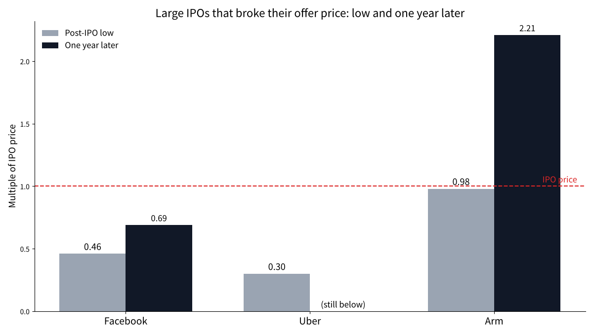
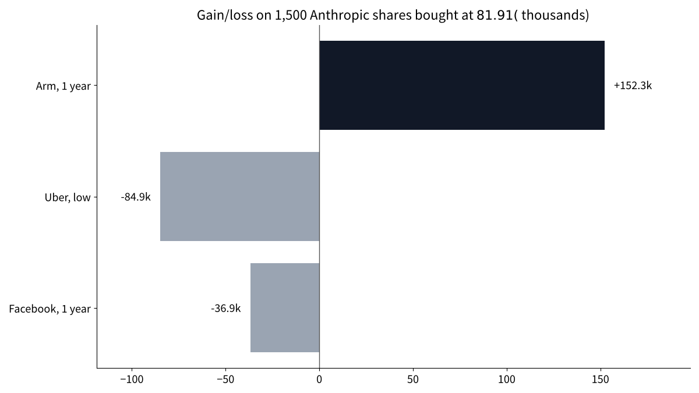

Anthropic broke its $83 IPO price. What happened to Facebook, Uber and Arm a year later? Testing it with SEC filings and Ritter’s IPO data
On November 24, US AI company Anthropic closed below its $83 IPO price for the first time, at $81.91. It traded as low as $76 during the session, about 26% below its first trade of $111.33.
When a big IPO breaks its offer price, people quickly call the listing a failure. Yet many large companies have been through the same thing.
The question here: what happened, one year later, to large tech stocks that fell below their IPO price soon after listing?
- A year after listing, Facebook was still 31% below its $38 IPO price, yet revenue had grown 55% in a year. It closed back above the IPO price about 14 months after listing.
- Uber broke its $45 IPO price on day one and fell to $13.71 in March 2020, about 30% of the offer price. It stayed below the IPO price for roughly four years.
- Arm briefly fell below its $51 IPO price within a week, but a year later it was about 2.2 times the offer price. The first weeks of trading told us almost nothing about the price a year later.

The question and background
First, the terms. The IPO price (offer price) is what underwriters charge institutional investors before the listing. The first trade is the first price set on the exchange on listing day.
IPO prices are usually set a little low, so shares often rise on day one. In data compiled by Jay Ritter of the University of Florida, the average first-day return of US IPOs is 18.8%.
That is why breaking the IPO price is treated as unusual. When Uber listed in 2019, Renaissance Capital said only about 10% of VC-backed US tech companies over the previous five years had ended their first day below the offer price.
One force that moves prices soon after listing is the lock-up: a promise by pre-IPO shareholders not to sell for a set period. Selling tends to pick up when it ends, so the first months are driven more by supply and demand than by the business.
Long-run IPO performance is a different story from first-day excitement. A 2002 paper by Ritter and Welch found that buying at the first-day close and holding for three years returned 22.6%, but trailed the overall market by 23.4% over the same period.
Data and method
I compare three large US tech stocks that fell below their IPO price soon after listing: Facebook (now Meta), Uber and Arm. All raised large sums and drew heavy attention before listing, like Anthropic.
For each, I took the IPO price, first-day close, post-listing low, price one year later, and revenue around the listing, from filings and contemporary reports. Revenue comes from annual reports filed with the SEC (10-K) and company results releases.
Prices are shown as multiples of the IPO price. For one year later I used the close about 12 months after listing. For Arm I could not get the exact one-year close, so I used the reported gain of 121% over the IPO price a little more than a year in.
This method has limits. Three cases is a small sample, and they come from 2012, 2019 and 2023, under different rates and cycles. Averaging them means little. The results show a tendency, not Anthropic’s future.
Results
| Company | IPO price | First-day close | Post-IPO low (× IPO price) | One year later (× IPO price) |
|---|---|---|---|---|
| Facebook (May 2012) | $38 | $38.23 | $17.55 (0.46×) | $26.25 (0.69×) |
| Uber (May 2019) | $45 | $41.57 | $13.71 (0.30×) | Still below the IPO price |
| Arm (Sep 2023) | $51 | $63.59 | $49.85 (0.98×) | About 2.2× |
| Anthropic (Nov 2026) | $83 | First trade $111.33 | $76 (0.92×, intraday) | — |
Facebook closed its first day just 23 cents above its IPO price, then kept falling, hitting $17.55 in September 2012. One year later it closed at $26.25, 31% below the IPO price.
The business was still growing. Revenue rose 55%, from $5.089 billion in 2012 to $7.872 billion in 2013. The stock first closed above the IPO price on August 2, 2013, about 14 and a half months after listing.
Uber opened at $42 and closed at $41.57, 7.6% below its IPO price. In March 2020, fears over COVID-19 pushed it down to $13.71, about 30% of the offer price. It stayed below the IPO price for about four years.
Arm went the other way. It rose 25% on day one to close at $63.59, then briefly fell to $49.85, below its IPO price, within a week. It then rose to about $125 in six months and was up 121% from the IPO price a little over a year later.
Anthropic fell about 26% from its $111.33 first trade in five trading days. Arm fell about 22% in a week, from its $63.59 first-day close to $49.85, a similar drop.
The time it took to win back the IPO price also varied widely: about 14 and a half months for Facebook, about four years for Uber, and roughly two months for Arm.

Sensitivity analysis
How much does the outcome change depending on which path Anthropic follows? I apply each company’s multiple of its IPO price to Anthropic’s $83 offer price, and value 1,500 shares bought at the November 24 close of $81.91.
| Path applied | × IPO price | Implied price | Value of 1,500 shares | Gain or loss vs $81.91 cost |
|---|---|---|---|---|
| Facebook one year later | 0.69× | About $57 | About $86,000 | About −$37,000 |
| Uber at its low | 0.30× | About $25 | About $38,000 | About −$85,000 |
| Arm one year later | About 2.2× | About $183 | About $275,000 | About +$152,000 |
The gap between the three paths is about $237,000 on 1,500 shares. Starting from the same broken IPO price, the result a year later ranges from a loss to more than doubling.

What this table shows is that the price right after listing says almost nothing about the price a year later. All three sat near or below their IPO price early on, but a year later the multiples ranged from 0.3 to 2.2.
Discussion
There is an opposing view. Breaking the IPO price exposes a gap between the underwriters’ valuation and the market’s, a signal that the deal was priced too high. Uber was once talked about at $120 billion before its IPO, was priced at about $82 billion, and still broke.
But what separated the three seems to be revenue growth and the rate cycle after listing, more than the early price. Facebook grew revenue 55% in a year and won back its IPO price in about 14 and a half months. Uber kept losing money and then hit a sudden downturn, so recovery took longer.
A small float also amplifies early moves. SoftBank Group held about 90% of Arm, so less than 10% of shares traded freely. When buyers and sellers crowd into a small number of shares, prices swing more than the business does.
Nasdaq’s analysis finds that nearly two-thirds of IPOs trail the market three years after listing. Regardless of early trading, few IPOs beat the market over the long run.
This piece has three limits: only three cases, different periods and rate environments, and no exact one-year close for Arm. The test will be Anthropic’s price one year after listing (November 2027) and its revenue growth in between. If revenue grows strongly while the stock stays below the IPO price, my conclusion that the early price is not a guide weakens.
Conclusion
A year after listing, three large tech stocks that broke their IPO price ended anywhere from 0.3 to 2.2 times the offer price. The price right after listing tells us almost nothing about the price a year later.
What separated them was revenue growth after listing and the rate and business cycle at the time. When looking at a newly listed stock, the next earnings report’s revenue growth is a better guide than the price.
Three steps help. First, decide whether to measure from the IPO price or the first trade. Next, check how much revenue grew in the first earnings report. Finally, check when the lock-up ends, and treat price moves around it as supply and demand.
How I see it
I have bought newly listed stocks several times, including SpaceX and Anthropic. Both fell at least once after listing.
In my experience, a newly listed stock drops once and then climbs. So I decided in advance to buy if it broke the IPO price. It broke $83 on November 24, so I decided to order 1,500 shares.
Looking at the three paths in this piece, what happens a year later depends on whether the company grows, not on the price. I own Anthropic because I believe it is an AI company that will change civilization, not because of early trading. I plan to check back in a year and add the result to this article.
Sources
- TechCrunch「Anthropic shares fall below IPO price, a worrying sign for AI startups」2026年11月24日 https://techcrunch.com/2026/11/24/anthropic-shares-fall-below-ipo-price-a-worrying-sign-for-ai-startups/
- Facebook, Inc.「Form 10-K for the fiscal year ended December 31, 2013」SEC https://www.sec.gov/Archives/edgar/data/1326801/000132680114000007/fb-12312013x10k.htm
- Facebook, Inc.「Facebook Reports Fourth Quarter and Full Year 2013 Results」2014年1月29日 https://investor.atmeta.com/investor-news/press-release-details/2014/Facebook-Reports-Fourth-Quarter-and-Full-Year-2013-Results/default.aspx
- Arm Holdings「One Year After the IPO」2024年9月 https://newsroom.arm.com/wp-content/uploads/2024/09/One-Year-After-the-IPO-Arm.pdf
- Jay R. Ritter「Initial Public Offerings: Updated Statistics」フロリダ大学 2026年2月16日 https://site.warrington.ufl.edu/ritter/files/IPO-Statistics.pdf
- Jay R. Ritter「Initial Public Offerings: Underpricing」フロリダ大学 2026年2月4日 https://site.warrington.ufl.edu/ritter/files/IPOs-Underpricing.pdf
- Ritter, J. and Welch, I.「A Review of IPO Activity, Pricing, and Allocations」NBER Working Paper No. 8805, 2002年2月 https://www.nber.org/papers/w8805.pdf
- Nasdaq「What Happens to IPOs Over the Long Run?」2021年4月15日 https://www.nasdaq.com/articles/what-happens-to-ipos-over-the-long-run-2021-04-15
- phys.org（AP）「Facebook soaring stock closes above $38 IPO price」2013年8月3日 https://phys.org/news/2013-08-facebook-soaring-stock-ipo-price.pdf
- TechCrunch「Uber’s first day as a public company didn’t go so well」2019年5月10日 https://techcrunch.com/2019/05/10/ubers-first-day-as-a-public-company-didnt-go-so-well
- Benzinga「One Year Since Uber’s IPO: A Look At The Stock’s Bumpy Ride」2020年5月 https://benzinga.com/general/education/20/05/15947550/one-year-since-ubers-ipo-a-look-at-the-stocks-bumpy-ride
- AJ Bell「ARM shares break below their listing price」2023年10月31日 https://www.ajbell.co.uk/group/news/arm-shares-break-below-their-listing-price
- The Motley Fool「Where Will Arm Holdings Stock Be in 5 Years?」2024年 https://www.aol.com/finance/where-arm-holdings-stock-5-091500577.html
Charts and top image by YUKI CAPITAL. This article is my own record, not investment advice.
I record my numbers and decisions every day on X.